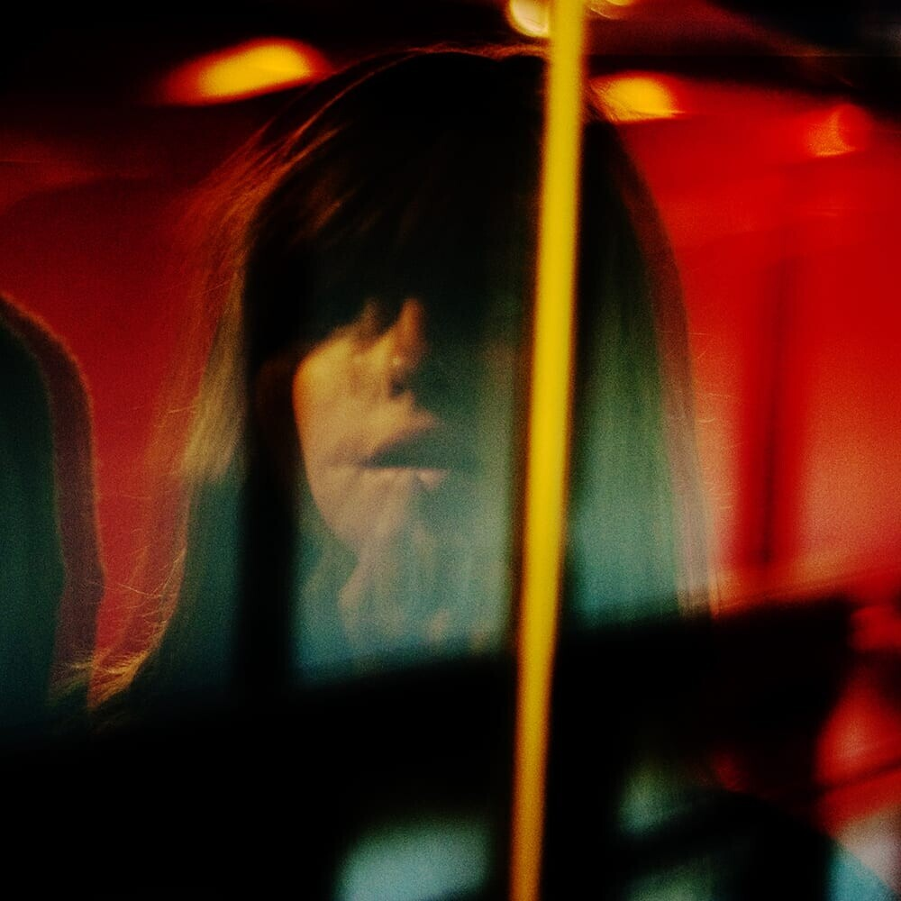
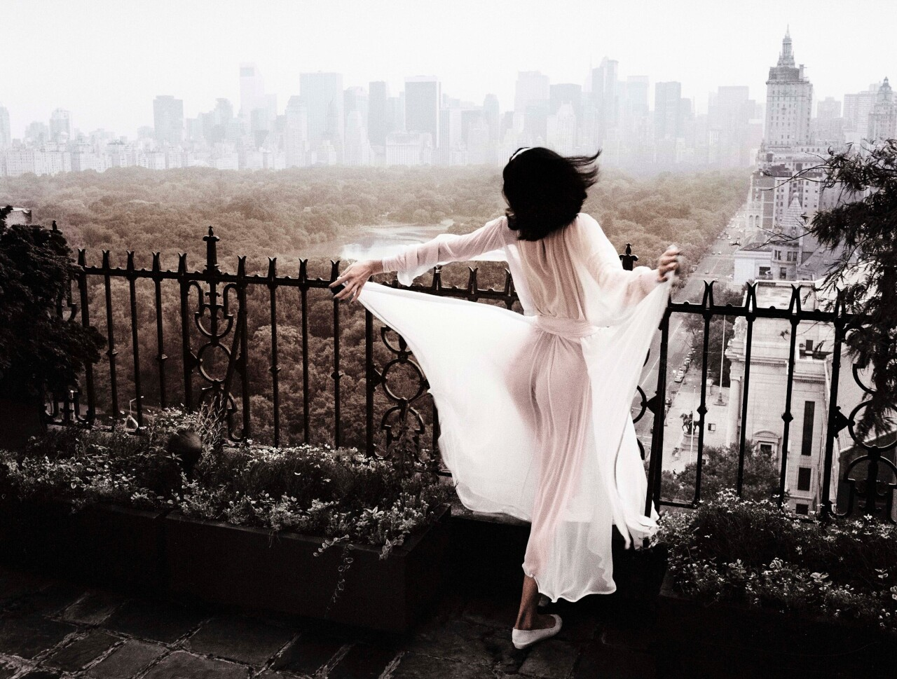
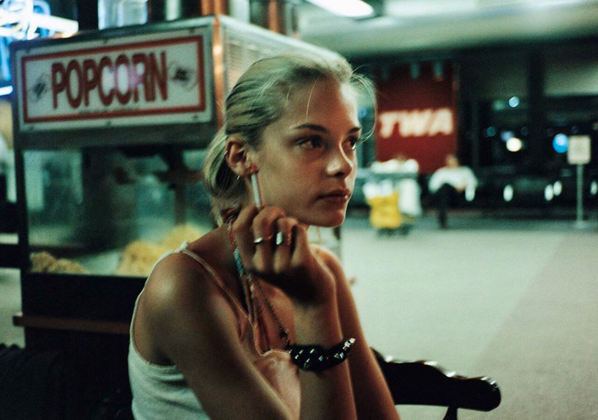

Джек Дэвисон: игра с реальностью и цветом
Cameralabs
22 февраля 2022

Английский фотограф-самоучка Джек Дэвисон родился и вырос в сельской глубинке. Его исключительное внимание к деталям окружающего мира, талант улавливать живую индивидуальность объекта сделали Дэвисона одним из самых востребованных фотографов и портретистов. Он неустанно экспериментирует с цветом, светом, ракурсом, ему нравится сбивать с толку, заставлять фотографию «звучать» вне контекста. Нестандартный взгляд на обыденность дарит его работам...
Патрик Личфилд: мир женской красоты и стиля в объективе королевского фотографа
Cameralabs
19 февраля 2022

Имя Патрика Личфилда неизменно ассоциируется с миром красоты и стиля. В модной и портретной фотографии он заметно преуспевал более 40 лет. Родственные связи с британской королевой открыли Личфилду двери Букингемского дворца, его приглашали снимать официальные портреты монархов, он был главным фотографом на свадьбе принца Чарльза и леди Дианы Спенсер, перед его объективом блистали аристократы, кинозвёзды и фотомодели. Женская красота – тема, в которой наилучшим образом раскрылся фотографический талант лорда Личфилда.
Давиде Сорренти: моментальная жизнь
Cameralabs
16 февраля 2022

Давиде Сорренти мог стать вундеркиндом модной фотографии, если бы не ушёл из жизни в двадцатилетнем возрасте. Он был в числе первых, кто отважился снимать моду без гламура, его документальный подход к коммерческой съёмке стал настоящим прорывом в 90-е и как нельзя актуален в наши дни. После его скандальной смерти, причиной которой ошибочно посчитали передозировку героином, работы Давиде стали определять как «героиновый шик». Лишь спустя...